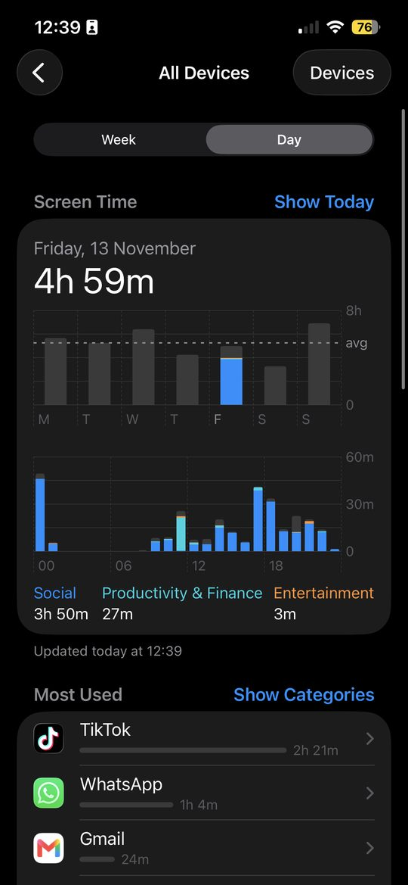
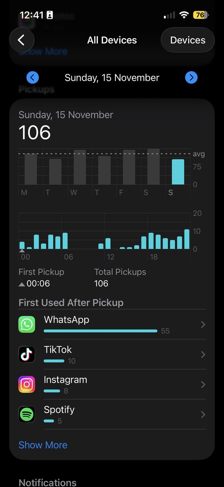
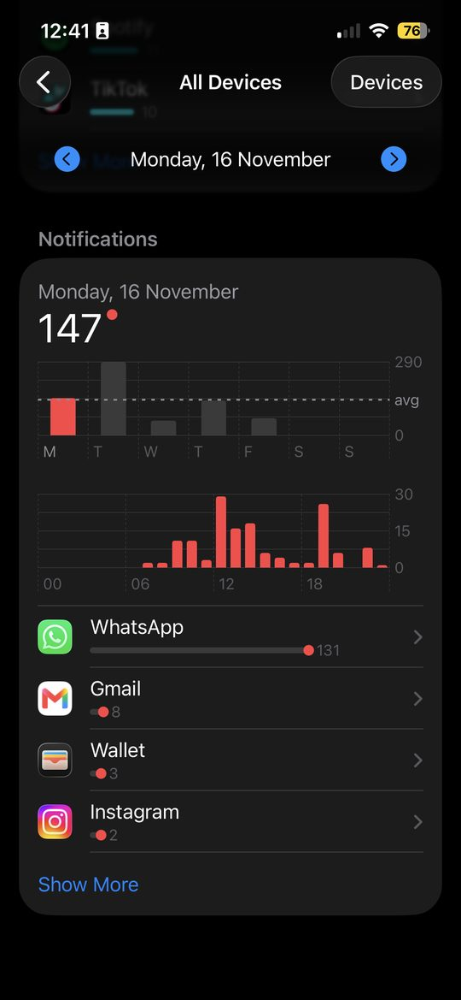
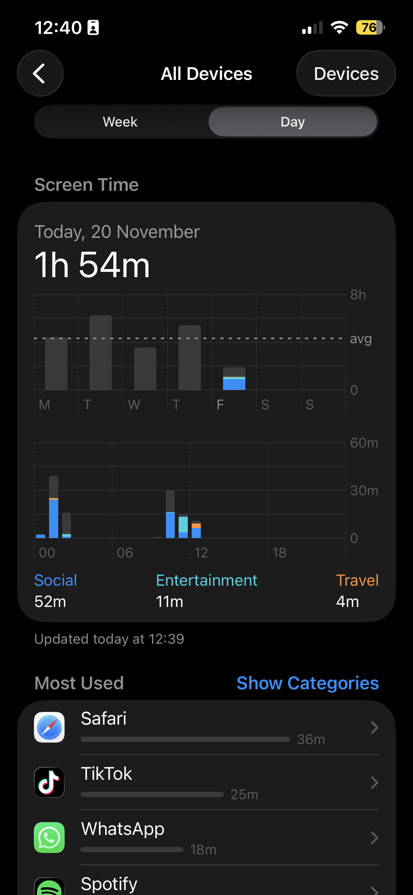

My 7-Day Experiment
What I tested and how
After reading about how apps are designed to hook you and comparing the tools that can help, I wanted to see what my own phone use looks like and whether one small change makes a difference. For seven days, from Friday 13 to Thursday 19 November 2026, I recorded my iPhone's built-in Screen Time numbers: daily screen time, pickups (the number of times I unlocked the phone), notifications received, and my top three app categories.
- Days 1–3 (13–15 November): I used my phone as usual, so these days are my baseline.
- Days 4–7 (16–19 November): I tried one change: NOTIFICATIONS OFF.
My data
The table has one row per day, with the average of each period in bold at the end of each group.
| Day | Date | Screen time | Pickups | Notifications | Top three categories |
|---|---|---|---|---|---|
| Days 1–3: normal use (baseline) | |||||
| Day 1 | Fri 13 Nov | 4 h 59 min | 145 | 158 | Social (3 h 50 min), Productivity & Finance (27 min), Entertainment (3 min) |
| Day 2 | Sat 14 Nov | 3 h 16 min | 152 | 143 | Social (1 h 42 min), Travel (11 min), Entertainment (7 min) |
| Day 3 | Sun 15 Nov | 4 h 42 min | 106 | 140 | Social (3 h 22 min), Travel (45 min), Entertainment (35 min) |
| Average, days 1–3 | 4 h 19 min | 403 | 147 | ||
| Days 4–7: one change tested | |||||
| Day 4 | Mon 16 Nov | 3 h 23 min | 98 | 147 | Social (2 h 42 min), Travel (11 min), Entertainment (30 min) |
| Day 5 | Tue 17 Nov | 1 h 35 min | 68 | 120 | Social (3 h 57 min), Productivity & Finance (23 min), Travel (20 min) |
| Day 6 | Wed 18 Nov | 1 h 26 min | 65 | 134 | Social (1 h 03 min), Travel (11 min), Finance (12 min) |
| Day 7 | Thu 19 Nov | 1 h 54 min | 79 | 165 | Social (1 h 05 min), Productivity & Finance (27 min), Entertainment (22 min) |
| Average, days 4–7 | 2 h 04 min | 77.5 | 141.5 | ||
Source: my own iPhone Screen Time data, read on 20 November 2026. Categories are those assigned by iOS, and the three listed are the ones with the most time on that day.
Screenshots
These are four of my own Screen Time screens from the experiment week, one for each kind of number in the table.




Reflection
Before the experiment I expected no big change on my attitude towards the phone. My baseline confirmed that Social apps dominate my phone use, because on Day 1 they took 3 h 50 min of my 4 h 59 min, and TikTok alone accounted for 2 h 21 min. I also expected to pick up my phone very often, and the 145 pickups on Day 1 and 106 on Day 3 confirmed it. WhatsApp was the first app I opened after 65 of those 145 pickups, which shows how much of my checking is driven by messages. Day 2 was calmer, at 3 h 16 min, so a lighter day is possible even without any change.
On Day 4, the first day of the change, I received 147 notifications and 131 of them came from WhatsApp, so almost all of my interruptions come from a single app. The number of notifications has barely been lowered, which I totally expected because has little effect by my behaviour change. People keep contacting me, professors keep sending emails, health notifications keep reaching me, weather notifications keep going on... I have muted all of them, and thus I get alerted less and therefore take the phone even less, but people keep notifying me the same.